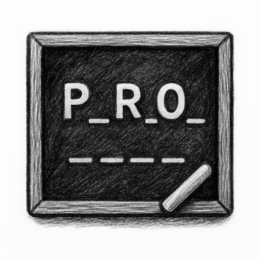

How to play
- Enter a French word guess each turn.
- Use feedback markers to infer correct letters and positions.
- Narrow possibilities with each guess.
- Solve the target within the allowed attempts.
Game mode
A mastermind-style deduction puzzle where you infer the target French word.
